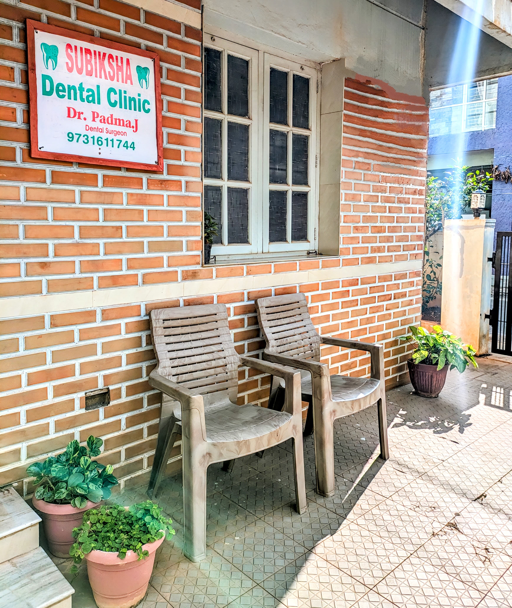
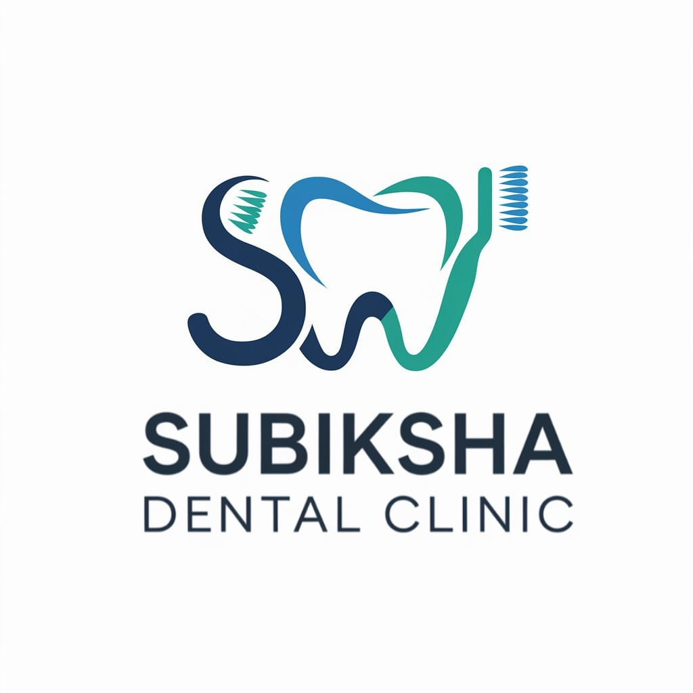
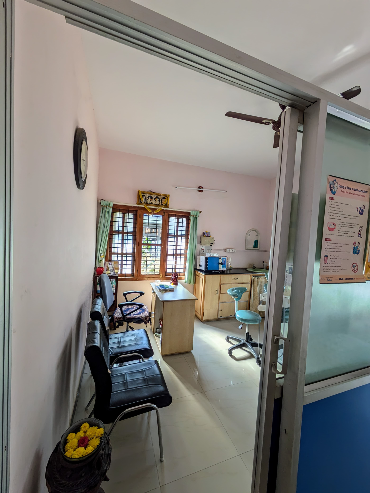
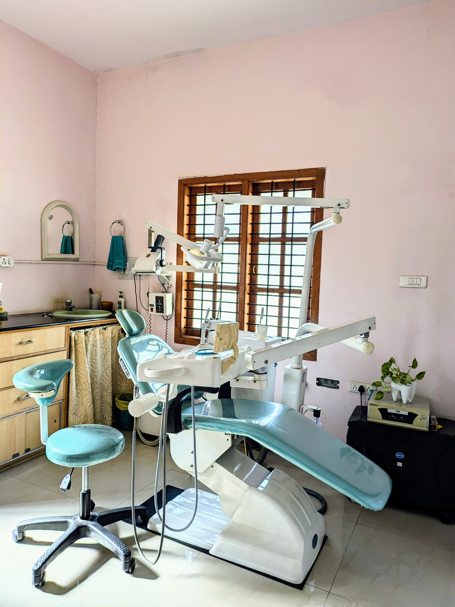
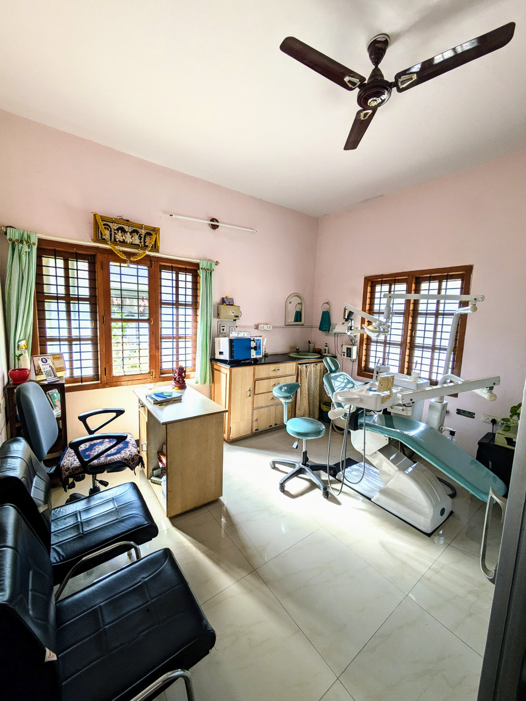

Your Smile, Our Care – Always with You

At Subiksha Dental Clinic, we believe that oral health is the gateway to overall well-being. Our practice is built on a foundation of clinical excellence and organic serenity, moving away from the cold atmosphere of traditional dentistry.
Led by a team of dedicated specialists, we utilize digital diagnostics and precision-focused treatments to provide high-end dental solutions tailored to each patient's unique needs.
Delivering trusted, premium dental care and expertise to our community.
Round-the-clock availability for urgent dental needs because your health can't wait.
Established in 2006, Subiksha Dental Clinic has been at the forefront of providing premium dental care to our community. We combine state-of-the-art technology with a soothing environment to ensure your comfort at every step of your journey. Our dedicated team of specialists brings over 20 years of clinical expertise to deliver smiles that truly change lives.

We perform safe and comfortable tooth extractions for severely decayed, damaged, or impacted teeth. Using modern anesthesia and minimally invasive techniques, we ensure reduced pain, faster healing, and proper post-treatment care for a smooth recovery.
Our cosmetic dentistry services are designed to enhance your smile and boost confidence. From teeth whitening and veneers to complete smile makeovers, we focus on achieving natural-looking, long-lasting results tailored to your facial aesthetics.
Root canal treatment is used to save infected or severely decayed teeth by removing the damaged pulp and sealing the tooth. Our advanced techniques ensure a painless procedure while preserving your natural tooth and restoring its function.
We provide gentle and friendly dental care for children, focusing on preventive treatments, early diagnosis, and cavity management. Our goal is to create a positive dental experience while promoting healthy oral habits from a young age.
Our specialized gum treatments address conditions like gum disease, receding gums, and infections. Using advanced surgical and non-surgical techniques, we restore gum health, improve aesthetics, and support long-term oral stability.
Dental implants offer a permanent solution for missing teeth by replacing them with strong, natural-looking artificial teeth. They improve chewing ability, preserve jawbone health, and provide a long-lasting, confident smile.
We design custom-fit complete dentures to replace all missing teeth, ensuring comfort, proper fit, and natural appearance. Our dentures help restore speech, facial structure, and the ability to eat and smile confidently.
Our orthodontic solutions correct misaligned teeth and bite issues using braces or clear aligners. These treatments not only enhance your smile but also improve oral function and overall dental health.
We use advanced laser technology for precise, minimally invasive dental procedures. Laser treatments reduce pain, bleeding, and recovery time, making them ideal for gum treatments, cavity care, and cosmetic procedures.



Direct, clear answers about our clinic, Dr. Padma J, dental procedures, emergency care, and appointments.
Subiksha Dental Clinic is located at Vidhyanagara, 7th Cross, Behind Vyshalli Comforts, Tumakuru, Karnataka 572101. We are centrally located in Tumakuru with convenient parking and wheelchair-friendly access.
Dr. Padma J is the founder and lead dental surgeon with over 20 years of clinical expertise in advanced restorative, cosmetic, and pediatric dentistry since establishing the clinic in 2006.
Yes. We operate a dedicated 24/7 emergency dental service for severe toothaches, facial swelling, sports dental injuries, and broken teeth. Call our emergency hotline at +91 9731611744 for immediate care.
No. Using modern rotary endodontics and gentle local anesthesia, our root canal therapy is virtually painless. Most patients report feeling instant relief from pre-existing toothache and resume normal activities quickly.
We provide full-spectrum oral healthcare: Tooth Extraction, Aesthetic Dentistry & Teeth Whitening, Root Canal Therapy, Pediatric Dental Care, Periodontal Gum Surgeries, Permanent Dental Implants, Complete Dentures, Orthodontic Aligners/Braces, and Soft-Tissue Laser Treatments.
You can schedule an appointment instantly via our online booking calendar below, or call our clinic desk directly at +91 9731611744 or email padmaj705@gmail.com.
Take the first step towards a healthier, brighter smile. Select your preferred time and book an appointment at your convenience.
Located in the heart of the city for your convenience.